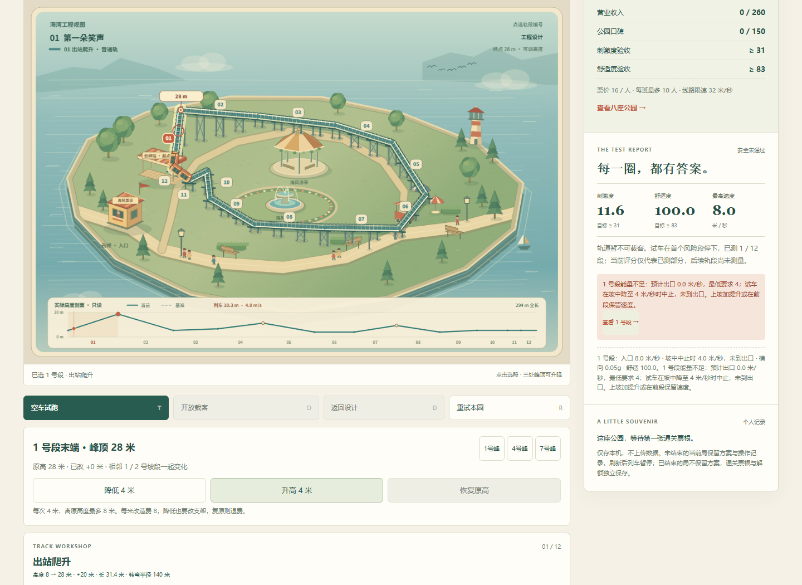
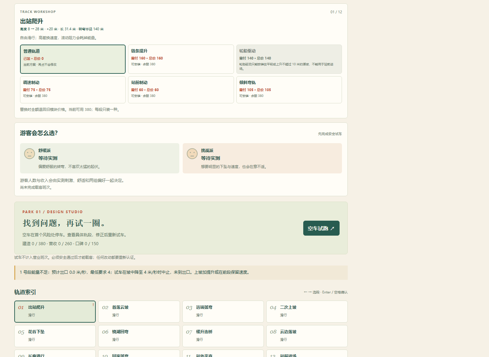
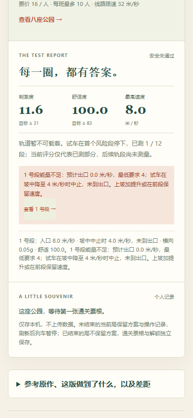
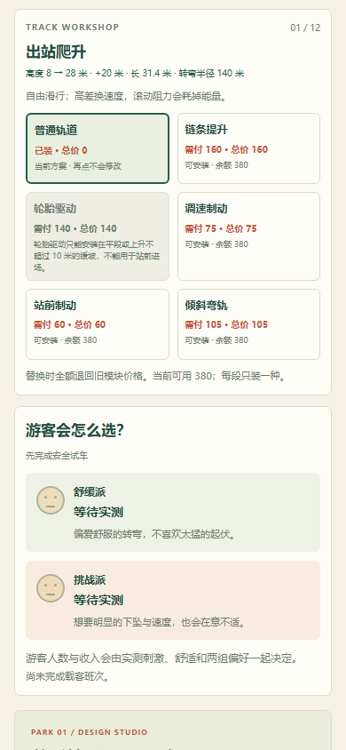

原诊断已有原因与段号；点击却只把焦点送到屏外索引，模块操作仍不可见。现在“定位N号段”显示对应修改面板，以段号和名称承接焦点；Tab可以进入模块按钮。不是自动修轨，不改变任何判定或经济数值。
基线357fd0863cc4935c5e7d38011cbdea699ac0a76f。主图均为正常初始1号段失速报告后的定位动作，原生截图，没有裁切/改绘。




两尺寸各正常完成：爬升失败→定位并明确装提升→回站失败→定位并明确装制动→空车认证通过→第一班8人回站、收入128/口碑74→返回设计并刷新保留。只验这个有限核心循环，不重跑八园通关。
后一次12号段键盘定位：桌面可见焦点 · 390CSS可见焦点。模型fixture与真实游玩分别记录。
完整范围与结果 · 正常基线 · 最终普通UI · 7组控制器结果 · 测试源码 · 普通输入脚本 · 测试选择器错误记录
桌面390CSS是模拟，真机、屏幕阅读器、声音、创造手感与审美未验。原有游戏引擎、存档、40项和旧版保留；仍为经典启发原创有限实验。